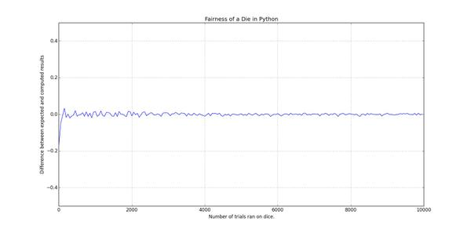
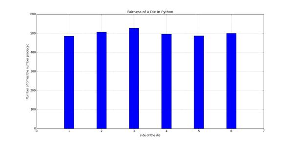

بررسی نظریه احتمالات در پایتون - بخش اول
بازیهایی که در اونها از تاس استفاده میشه معمولا تا حد زیادی به شانس بستگی داره. افراد مختلف تعاریف مختلفی از شانس دارن، عدهای سعی میکنن که با تمرکز روی یک عدد یا دعا کردن شانس خودشون رو برای ریختن تاس مناسب افزایش بدن و عدهای هم به روشهای مختلف دست به تقلب میزنن. اما ریاضیات تعریف متفاوتی از شانس داره. ریاضیات، شانس رو «اندازهی احتمالِ وقوعِ یک رویداد» تعریف میکنه که با یک عدد بین ۰ و ۱ نمایش داده میشه و همونطور که میدونین در مبحث احتمالات بررسیش میکنه.
از اونجا که ایدهی تاس اینه که ما به یک روشی یک عدد تصادفی بین ۱ تا ۶ انتخاب کنیم، من این کار رو به راحتی با استفاده از ماژول random در پایتون شبیهسازی میکنم تا بتونم بعدا بررسیش کنم:
import random def roll_die(num_sides): 'simulates rolling a die' return random.randrange(1, num_sides + 1) |
بر اساس چیزی که ریاضیات میگه، فرض کنید ما یک تاس عادلانهی ۶ وجهی داشته باشیم که روی هر وجه اون یکی از اعداد بازهی از ۱ تا ۶ نوشته شده باشه. هر عددی رو که در این بازه در نظر بگیریم و تاس رو بریزیم، احتمال این که عدد مورد نظر ما بیاد \(\frac{1}{6}\) است.
یک روش امتحان کردن این مساله میتونه به این صورت باشه که ما بارها تاس مورد نظرمون رو بریزیم و انتظار داشته باشیم که میانگین دفعاتی که تاس مورد نظرمون ریخته شده نزدیک به \(\frac{1}{6}\) باشه. و این یعنی اگر میانگین رو M در نظر بگیریم، اختلاف M با عدد \(\frac{1}{6}\) باید نزدیک به صفر باشه.
از اونجایی که من حوصله ندارم یک تاس رو «بارها» بریزم و نتیجهها رو یادداشت کنم و در آخر میانگین مورد نظرم رو بررسی کنم، چند خط کد پایتون مینویسم و این مساله رو با یک نمودار بررسی میکنم:
نموداری که با اجرای این کد نمایش داده میشه مشخص میکنه که هر چه تاس بیشتری ریخته شده اختلاف میانگین با \(\frac{1}{6}\) بیشتر به صفر نزدیک شده:
برای این که مفهومتر بشه، قضیه رو یک جور دیگه امتحان میکنیم. فرض کنید تاس رو ۳۰۰۰ بار بریزیم، با توجه به این که \(\frac{1}{6}*3000=500\) ، میتونیم انتظار داشته باشیم که هر یک از اعداد روی تاس حدوداً ۵۰۰ بار ریخته بشن. بنابراین میتونیم چند خط کد دیگه بنویسم که ۳۰۰۰ بار تابع ما رو اجرا کنه، اعدادی رو که ریخته میشن بشمره و در نهایت نتیجه رو در یک نمودار دیگه بررسی کنیم:
نمودار به دست اومده این مساله رو تایید میکنه:
نتیجه
این نتایج نشون میده که در مقیاس بزرگتر و زمانی که تعداد دفعات انجام یک فرایند تصادفی زیاد بشه، نتیجهی به دست اومده خیلی شانسی نیست. یعنی هر چه تعداد دفعات ریختن تاس ما به بینهایت میل کنه، نتیجهی به دست آمده مشخصتر میشه. این مساله رو به خیلی چیزها میشه بسط داد و استفادههای زیادی در علوم مختلف داره، که تفسیرش با شما و علم مورد نظرتون.
در بخش بعدی به معرفی روش مونت کارلو (Monte Carlo method) و استفادهاش در طراحی هوش مصنوعی برای انجام بازیها و محاسبه حرکت بعدی در بازی، خواهم پرداخت.

{kind=link}
{kind=link}
دیدگاهها
Comments powered by Disqus